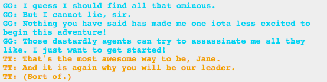

Huh, this comic sure has a lot to say about what makes a person a leader. I would make more commentary on that, but I’m sure there’s a lot of meta. I think it’s sweet, though, how each group interacts with their leader, be it Karkat, John, or Jane. There’s a real tenderness in their affection and I love it.